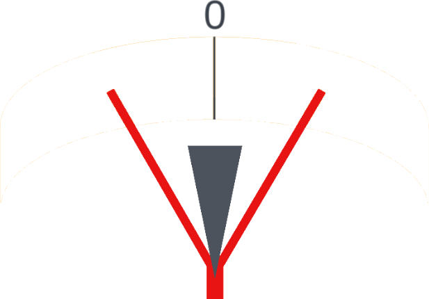
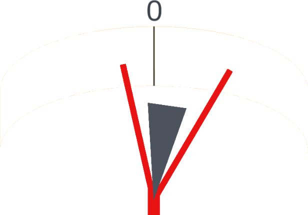
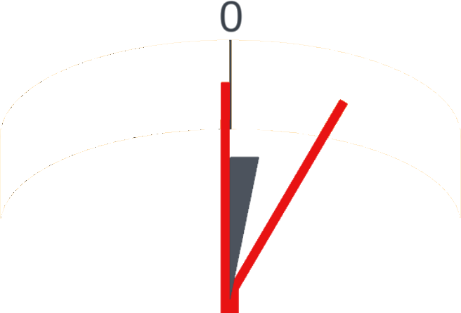
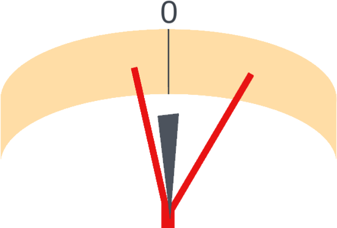
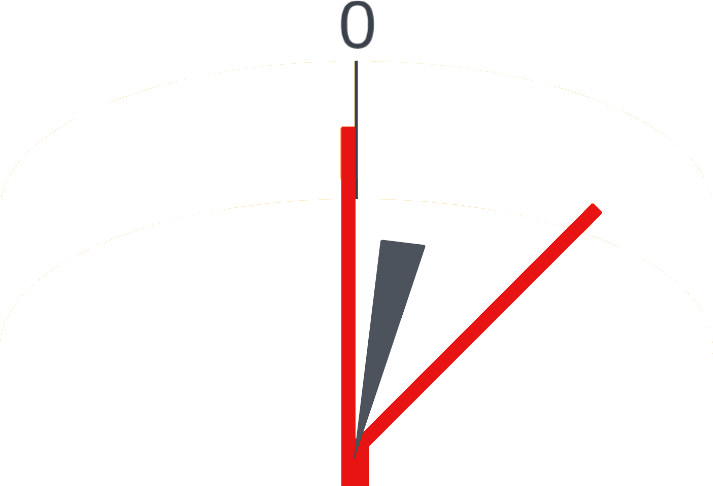

|
|
|
Laser Goniometer |

Laser Goniometer

|
Jan Švancara's document on building a Laser Goniometer outlines a great way to measure bevel angles with a simple laser device.
This device makes those measurements very precise. And his use of kids toys (Erector Set) to make it lends to a bit of fun.
I've developed a 3D-printed design using a laser easily sourced from Amazon (and possibly available from other sources as well).
The jig consists of 3 pieces:
The lower picture to the right shows the bottom side of this tool. The two black thumb screws are used to hold the bracket (blue part) against the scale (white part). The bracket can be adjusted to better align the knife’s edge relative to the laser which is held in a fixed position in the scale.
|
Double-bevel Blade |
|
Single-bevel Blade |
|||
|
Properly Aligned |
Improperly Aligned |
|
Properly Aligned |
Improperly |
|
|  |  |
|
 |  |  |
|
Centered: Light beams equi-distant from the 0° mark |
Rotated clockwise: Light beams unequal distance from the 0° mark |
|
Properly aligned: Left light beam at the 0° mark. |
Rotated counter-clockwise: Left light beam away from the 0° mark. |
Rotated clockwise: Right light beam too far due to over rotation. |
When aligning the knife in the scale, you need to rotate the knife in the scale until you have proper alignment of the reflected laser beams.
The pictures to the right show blade alignments which are both correct and incorrect.
This is especially key when measuring a single-bevel knife. With this style of blade, you rotate until the flat side’s dot is on 0° and then read the other side’s dot. If you continue to rotate the blade, the left side will stay at 0° but the right side will increase, giving an incorrect reading.
You may find that you need to rotate the laser within the hole on the scale (the white part in the picture to the left). It may not be perfectly aligned with 0 on the scale when no blade is being measured.
The rotation of the laser is shown in the picture to the left with blue arrows.
The laser light reflects off the blade’s sharpened edge, and shows the blade’s edge angle on the scale. There are two laser reflections shown, one on each side of the scale. Those represent the edge angle (β) for that side. The sum of the edge angles is the included angle (α).
When using this, you will probably also see extra laser dots around 0°. These are the result of the laser’s beam being wider than the knife’s blade. Please ignore those.
Double bevel knife edge
For knives which have a double-bevel edge, there is a real probability that the blade may be held in a manner where it is not aligned correctly relative to the laser’s light beam. If this is the case, one side may reflect a different measured angle than the other side.
This not a problem.
If the left side measures 12° and the right side measures 16°. We can average these two angles to determine the actual bevel angles (β) for the knife.
These calculations are: \begin{align*} \tag{1} β &= \frac {12° + 16°} {2}\\ &= 14°\\ \\ \tag{2} α &= 2 \times β\\ &= 28°\\ \end{align*}
As a side note, there could be a knife where the two bevel angles are not equal. In that case, you may need to be more dilligent in measuring the separate bevel angles.
Single bevel knife edge
For knives which only have one beveled edge, the angle measurement is different. Japanese marking knives are like this, as are the Felco/Swiss Army gardening knives.
As you would expect, there are two separate bevel angles. These are denoted as β1 and β2 for this discussion.
As expected with knife blades like this, one side should be 0°, and no averaging of the angles is required. However, in the case where one angle is not 0°, you will need add the two measured angles to determine the bevel angle.
If the left side measures 12° and the right side measures 2°, the bevel angle (β) is determined by adding the two measured angles. \begin{align*} \tag{3} β_1 &= 12° + 2°\\ &= 14°\\ \\ \tag{4} β_2 &= 0°\\ \\ \tag{5} α &= β_1\\ &= 14°\\ \end{align*}
You can purchase one of the 3D-printed versions from Colvin Tools.
The jig I made is comprised of two 3D-printed pieces, with a laser and a few other parts attached. The Fusion 360 file (f3d) is also supplied in case you would like to modify this design for different sizes or styles of lasers.
Right-click on the links below to save the noted files.
|
Files |
|||
|---|---|---|---|
|
Part |
3MF File |
STL File |
F3D File |
| Goniometer Scale | Goniometer-Scale.3mf | Goniometer-Scale.stl | Goniometer.f3d |
| Goniometer Knife Holder | Goniometer-KnifeHolder.3mf | Goniometer-KnifeHolder.stl | |
The following parts are also needed. For the Amazon-sourced parts, links are provided to the currently-available parts.
|
Part |
Number Req’d |
Source |
Part Number |
|---|---|---|---|
| Rechargeable Red Laser Pointer High Power Red Beam Laser Light Long Distance Range, 0.75” diameter x 5 ⅜” long | 1 | Amazon | Laser |
| Round, countersunk disc magnets ⅜” x ⅛” (10mm x 3mm), #4 screw hole - rare earth neodymium magnetic fasteners for crafts, cabinet closures, & workshop | 2 | Amazon | Magnets |
| Plastic-head, knurled thumb screws, M6 x 1 mm thread, 10 mm long, 19 mm head diameter | 3 | McMaster-Carr | 96016A353 |
| 18-8 stainless steel Phillips flat head screws for metal, no. 4 size, 5/16” long | 2 | McMaster-Carr | 90065A107 |
The following tools are needed to tap the holes in the scale (white part) for the thumb screws.